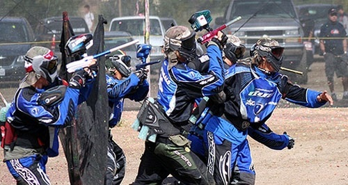

Players in New Hampshire
Paintball is an extreme sport created by a hunter in the 1970's. It was created after the hunter returned from a hunting expedition and after reading the short story, The Most Dangerous Game by Richard Connell. The first game was played by a group of twelve people using pistols that are intended for marking trees for livestock ranchers.
Since that first game much has changed. Originally, paintball was a capture the flag type game. There are a numerous game types that are played now. Professionally, there are generally two teams in an arena with inflatable bunkers to hide behind. There are also much larger scale games played in the woods as if real-combat scenario.
Not only have the game types changed, but also the equipment, safety and regulations. Markers can range anywhere from a few hundred to thousands of dollars. They have also moved from all mechanical devices to electronics. They can shoot fully automatic at extremely high rates. Measured in paintballs per second, even an average gun can fire about 20-30 bps. To keep up with that rate of fire, the gun must be fed fast enough in order to not break paint. These are all considerations that have been taken into the game and equipment has become a competitive edge.